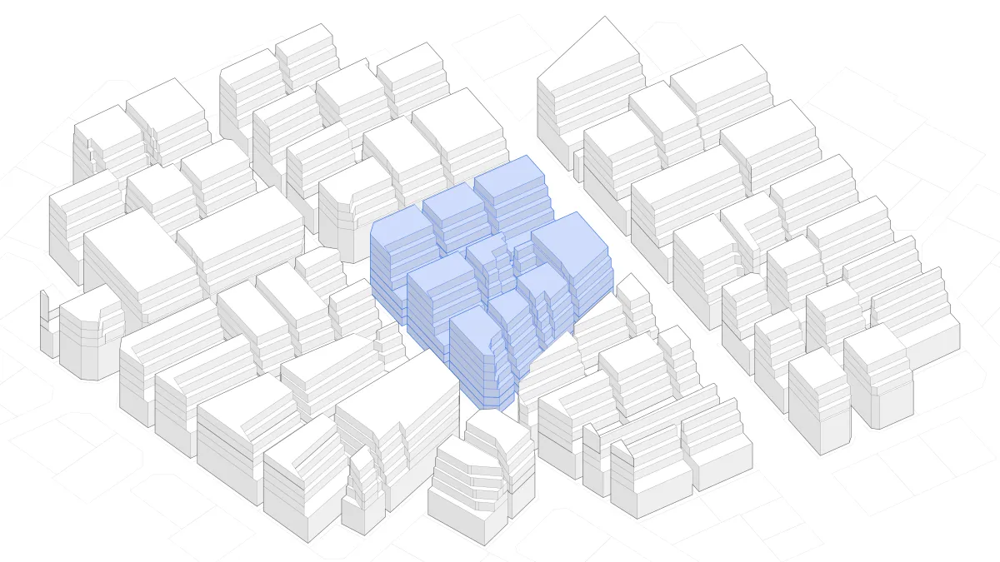
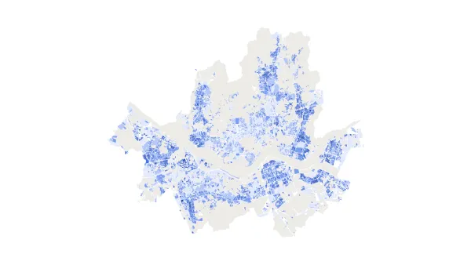
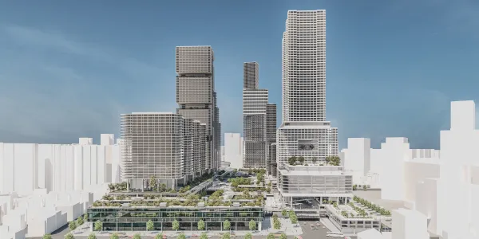
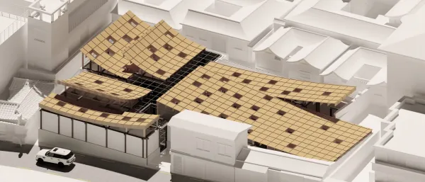

변상훈
법규에서 매스까지, 설계 초기 단계를 자동화합니다.
- 현재
- PCP스탠다드 · 커뮤니티하우스 루프
- 이전
- 에디트콜렉티브 · 플렉시티, 2020–2024
- 학력
- 서울대 도시설계학 석사, 홍익대 실내건축학 학사
- 연락
- bsh969flash@gmail.com
github.com/969flash
작업

Buildable Envelope Automation
2025–26LLM 기반 건축가능영역 설계 자동화
연구/개발 · 서울대 석사논문, 「도시설계」 27(3)
LLM이 법규 조문에서 판단 규칙을 뽑고, 설계자가 검증한 규칙으로 필지별 3D 건축가능영역을 계산한다. 강남구 일반주거지역 21,584필지에 일조권 사선제한 개정안을 적용했다.

AI 기반 종이지도 디지털화와 간선도로 시계열 복원1970–2004년 7대 광역시 간선도로 시계열



Yongsan Riverway
2024용산 한강변 도시설계
설계 · 서울대 IPUD 스튜디오
복개된 만초천을 용산역에서 한강까지 흐르는 물길로 되살리고, 옆 데이터센터의 폐열을 지구 냉난방에 돌려 쓰는 수변 도시설계. 한국도시설계학회 작품전시회 우수상.

KIT
2021키베라 슬럼 주거 키트 공장과 브릿지
설계 · 홍익대 졸업설계
나이로비 키베라 슬럼 경계에 주민을 고용하는 주거 키트 공장을 세우고, 공장 위 브릿지로 도시와 슬럼을 잇는다.


경력
부지 매입 검토를 위한 사내 규모검토 자동화 도구를 개발하고 있다.
「데이터 기반의 유휴·저이용 교육시설 진단」 과제에서 전국 교육시설의 공간 데이터를 모아 DB를 만들고 GIS로 분석했다. 결과는 AURI 일반연구보고서 2025-9로 발간되었다.
그룬닷
2025.01–02Ladybug로 기숙사 프로젝트의 일조·풍환경·일사량을 분석하고, 우크라이나 전후 재건 신도시 구상의 마스터플랜 모델링과 규모 검토를 했다.
기획설계 자동화 서비스 플렉시티에서 건축 법규를 기하 알고리즘으로 옮기는 일을 했다. 일조 사선, 주차, 공개공지, 복수동 주상복합 배치 자동화 개발에 참여했다.
인터페이스스튜디오
2019.12–2020.06광주 대표도서관 설계공모의 패널 도면, 렌더, 다이어그램과 사옥 프로젝트의 렌더·실시설계 도면 작업에 참여했다.
학력
- 2024.09–2026.08서울대학교 협동과정 도시설계학전공 석사, LAUS 건축도시공간연구실
- 2015.03–2023.08홍익대학교 실내건축학전공 학사
논문
- 2026.06LLM 기반 건축가능영역 설계 자동화, 「도시설계」 27(3), KCI, 제1저자
- 2026.04PLE Index, CAADRIA 2026 Full Paper, 제1저자, 구두 발표
- 2026.04AI-Based Temporal Reconstruction of Arterial Roads via Map Digitization, CAADRIA 2026, 제2저자
- 2025한국도시설계학회 춘계·추계 학술대회 발표 2편, 제2저자
- 2025데이터 기반의 유휴·저이용 교육시설 진단, AURI 일반연구보고서 2025-9
수상
- 2025.11한국도시설계학회 제2회 도시설계 작품전시회 우수상, Yongsan Riverway
- 2025.02YAC Garden of Knowledge, Honorable Mention, 팀
강의
- 2025서울대 환경대학원 강의조교, 파라메트릭 도시설계 모델링·환경설계와 디지털 미디어
- 2025.08LAUS 자동화설계 워크숍, Rhino·GH Python 강사
- 2023EDIT WORKSHOP, 컴퓨테이션 디자인 교육